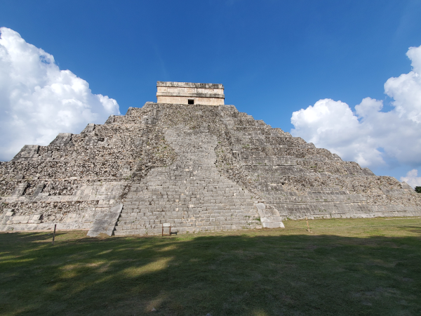

I have over 20 years of experience in data and analytics solutions. Currently, I am focusing on cloud infrastructure and implementing scalable technical environments. You can read more about current industry trends in this ZDNet article on cloud solutions.
I enjoy traveling to historic sites and exploring nature through hiking.


Visit the Official State Park Page for more info.